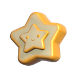
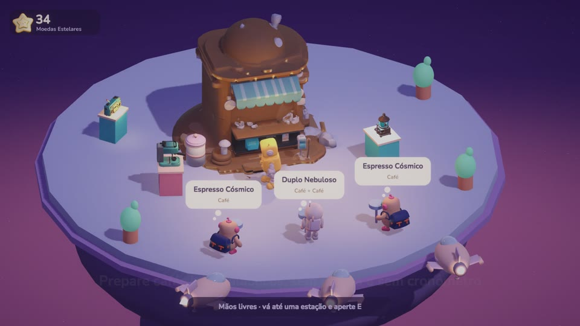
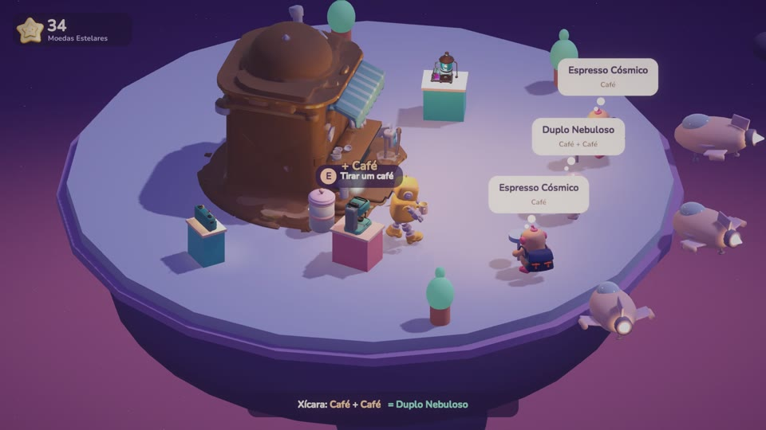
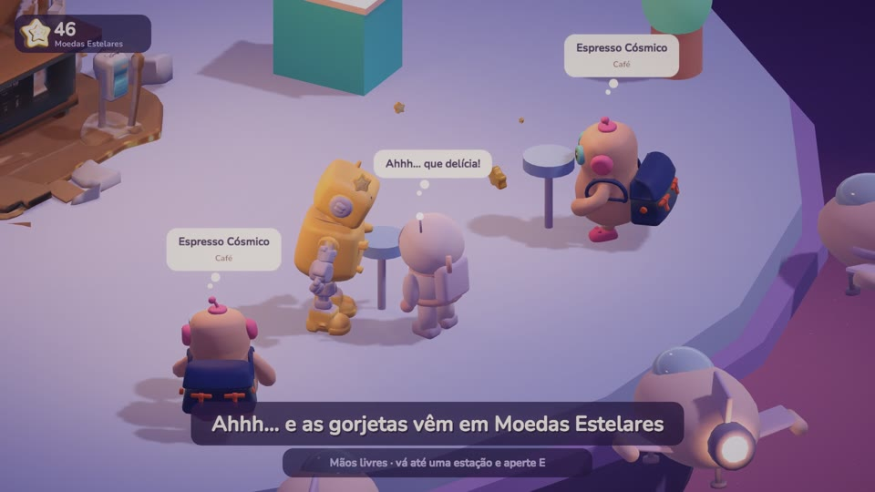
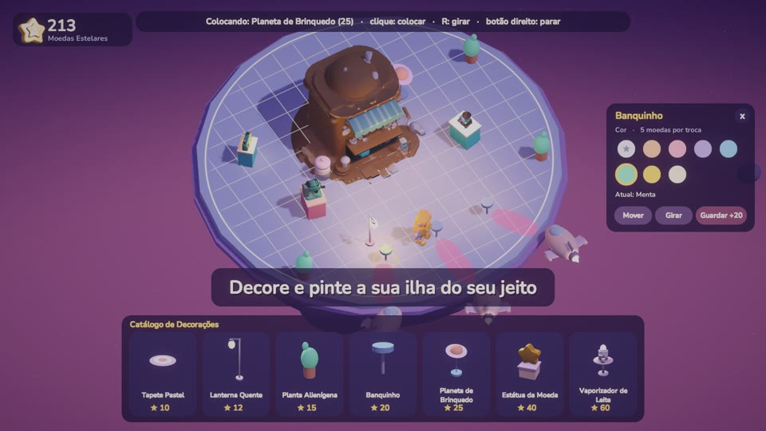

Cosmic BrewVocê é o R0-B0, um robô minerador aposentado e muito cansado, que abriu um quiosque de café numa rota de descanso do cosmos. Viajantes chegam de navezinha, fazem o pedido num balão de pensamento, e o Ro prepara tudo no próprio ritmo, ao som de um rádio lo-fi.
Aliens, astronautas perdidos e robôs estacionam na borda da ilha para uma pausa.
Café, poeira estelar e leite nebuloso. Errou? Joga fora e faz de novo, sem punição.
Modo Construção em grid: compre, mova, gire e pinte decorações, o deck e o quiosque.
Três faixas originais e sons ASMR: a máquina de café, as xícaras, as naves passando.
Cada cliente satisfeito solta um "Ahhh…" e deixa gorjeta para você expandir o quiosque.
Português, English, Русский, 한국어, 中文 e 日本語. Salvamento automático.




| Andar | W A S D |
| Preparar / servir / interagir | E ou Espaço |
| Modo Construção | B, depois clique nos objetos |
| Girar / guardar item | R / X |
| Girar câmera / zoom | Z C / rodinha do mouse |
| Música / pausa | M / Esc |